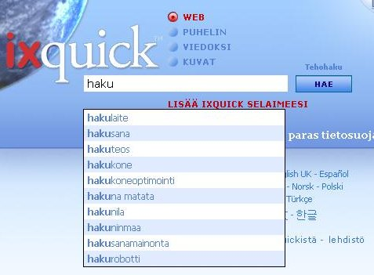

Hakuehdotusten kuvaus | ||
|
Q: Miten hakuehdotukset otetaan käyttöön? A: Voit sallia hakuehdotukset valitsemalla ne 'Asetukset-sivulla. 'Asetukset'-sivulla voit valita minkä tahansa Ixquick-sivun. |  | |
|
Q: Miten Ixquick-hakuehdotuksia käytetään? A: Kun syötät haun, vertaamme hakusanaasi laajaan yleiseen ehdotusvalikoimaan, ja suosituimmat hakutulokset näkyvät laskevassa järjestyksessä. | ||
|
Q: Miten Ixquickin hakuehdotukset poikkeavat muista hakukoneista? A: Useimpien hakukoneiden hakuehdotukset perustuvat todellisiin käyttäjähakuihin. Syöttämällä hakusi näet siten, mitä muut käyttäjät useimmin hakevat. Tämä ei kuitenkaan tyydytä Ixquickia, yksityisyyden suojan pioneeria. Näytämme yleisesti olennaiset ehdotukset kaikille tekemillesi hauille. | ||
|
Q: Mihin Ixquickin ehdotukset perustuvat? A: Ehdotuksemme tulevat useista eri lähteistä vaihdellen sanakirjasanoista yleisiin mielenkiintoisiin sivuihin, joita verkossa on vapaasti käytettävissä, kuten Wikipedia-sivut. | ||
|
Q: Ovatko ehdotukset käytettävissä kaikilla kielillä? A: Kyllä, ehdotukset ovat käytettävissä kaikilla Ixquickin tarjoamilla kielillä. | ||
|
Q: Näyttääkö Ixquick myös maksettuja ehdotuksia? A: Ei. Ehdotukset perustuvat yksinomaan suhteelliseen suosioon. Mainoksia ei huomioida. | ||
|
Q: Näen englanninkielisiä ehdotuksia avainsanoille käyttäessäni Ixquickia esimerkiksi saksaksi. Miksi näin tapahtuu? A: Englanti on selkeästi Internetin käytetyin kieli. Algoritmimme tuottaa ensin kielellesi olennaiset ehdotukset, mutta jos kyseiselle kielelle ei ole riittävästi ehdotuksia, tarjoamme myös joitakin ehdotuksia englanniksi. Luonnollisesti ehdotukset valitsemallasi kielellä näkyvät ensimmäisinä. | ||
|
Q: Voinko odottaa saavani yksilöllistettyjä ehdotuksia seuraavilla käyttökerroilla? A: Kuten tiedät, emme tallenna käyttäjien henkilökohtaisia tietoja. Sen vuoksi emme tarjoa yksilöllistettyjä ehdotuksia, sillä se loukkaisi yksityisyyden suojaasi. | ||
|
Q: En halua, että lapselleni ehdotetaan aikuissisältöä. Voinko varmistaa tämän? A: Voit tietysti. Ehdotukset ovat yhdenmukaisia Internetille/kuville valitsemiesi perhesuodattimen asetusten kanssa. Jos suodattimen asetukset on asetettu suodattamaan aikuissisältö haun aikana, algoritmimme tekee parhaansa ollakseen näyttämättä aikuissisällöllisiä ehdotuksia. | ||
|
Q: Olen ottanut käyttöön hakuehdotustoiminnon, mutten näe mitään ehdotuksia. Mistä tämä voi johtua? A: Varmista, että Javascript on otettu käyttöön selaimessasi. Tämä on hakuehdotustoiminnon edellytys. | ||
|
Q: En käytä evästeitä tai poistan ne säännöllisesti. Voinko kuitenkin käyttää hakuehdotustoimintoa? A: Kyllä voit. Koska olemme yksityinen hakukone, olemme luoneet 'URL-generaattori' -vaihtoehdon, joka sallii sinun tallentaa mieltymyksesi URL-osoitteeseen evästeen tilalle. 'URL-generaattori' -vaihtoehto on saatavilla 'Asetukset-sivun alaosassa. |
||